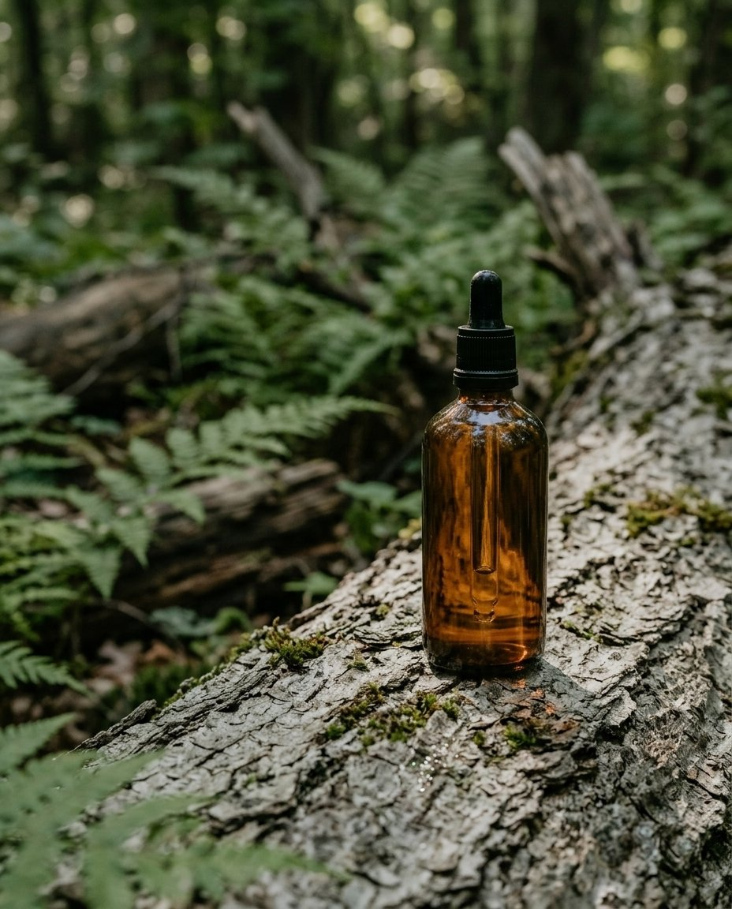

Google Pomelli Photoshoot vs ModoAI: same product photo, tested (2026)
Who runs this: Ted. Ted works at Uneedcomms, the company that makes ModoAI (Modo AI), one of the tools on this page. Competitor facts come only from their official pages, with the date checked, and this page says where other tools did better. How tests are run.
Google Pomelli Photoshoot or ModoAI?
Both turned our one product photo into new shots without a written prompt. Pomelli is free, returned six themed shots in about a minute and can put people in the scene. ModoAI is paid, explains why it picked a style, proposes concepts and does not generate people. On product fidelity both scored 3 of 5; Pomelli's shots looked more photo-real and store-ready in our test (realism 5 vs 4, store-ready 4 vs 3).
What did each tool make from the same photo?

How do Pomelli and ModoAI compare?
| Google Pomelli Photoshoot | ModoAI | |
|---|---|---|
| Setup before the first shot | A Business Profile, built from your website, uploaded files or a sample template (we used the sample "Skincare Co." template) | Sign up, upload one product photo (our workspace category was preset to Food / Beverage and left unchanged) |
| Who decides the scene | Pomelli pre-selected 6 templates (Cozy Autumn, Harvest Season, Studio, Ingredient, In Use, Halloween); we kept them | ModoAI recommends one style with a written reason, then proposes concepts to pick from |
| Output in our run | 6 images, 768 x 1365 (9:16 default), about 1 minute | 1 image, 928 x 1152 (4:5), about 70 seconds after a 2 to 3 minute planning step |
| Product fidelity (1 to 5) | 3: pipette drawn thinner | 3: cap and collar shorter |
| Realism (1 to 5) | 5 | 4 |
| Store-ready (1 to 5) | 4 | 3 |
| People in shots | Yes: the "In Use" template showed a woman applying the dropper | No: does not generate people, faces or body parts |
| Language and access | English; 202 countries and territories, ages 18+ (Google support page) | English and Korean; global launch 2026-05-31 |
| Price | Described by Google as a free tool from Google Labs; our run did not ask for payment | $75/month (USD, tax excluded) for 300 credits; 20 free credits on sign-up, valid 7 days |
Tested 2026-10-28 on the same unlabeled amber dropper bottle photo used across this lab; first images, unretouched. Pomelli facts: Google blog (2026-02-19), where you can use Pomelli. ModoAI facts: What is ModoAI. One product, one day.
Which one should you use?
- You want many themed, photo-real shots for free, including lifestyle shots with people: Pomelli.
- You want the tool to explain its style choice and plan one concept for your buyer, and you cannot use people in images: ModoAI.
- Exact product preservation matters most: neither matched ChatGPT Free in our tests (4 of 5, with a written prompt); see Nano Banana 2 vs ChatGPT.
FAQ
Is Google Pomelli Photoshoot free?
Google's announcement calls Pomelli a free tool from Google Labs, and our run on 2026-10-28 did not ask for payment.
Does Pomelli keep my product the same?
Close but not exact in our test: body, cap and bulb were kept, the glass pipette was drawn thinner. We scored it 3 of 5, the same as ModoAI.
What is the main difference between Pomelli and ModoAI?
Pomelli applies templates it pre-selects, can include people and in our test looked more photo-real; ModoAI recommends one style with a written reason, proposes concepts and never generates people. Pomelli is free; ModoAI is a paid subscription with a free trial.